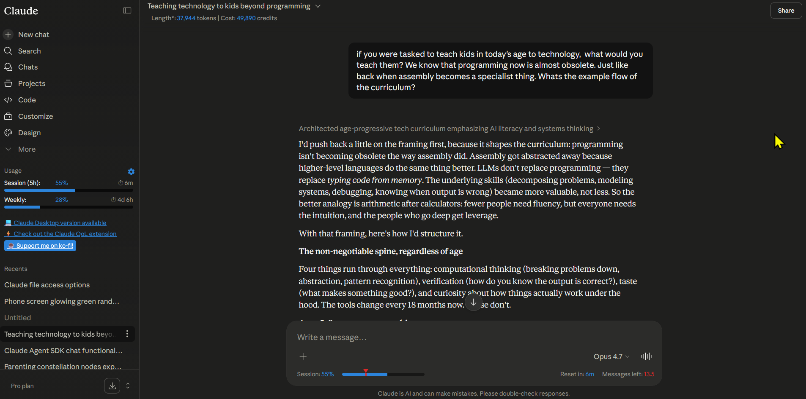
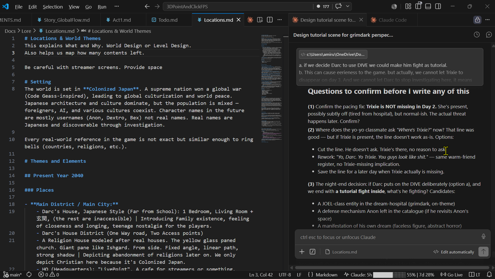
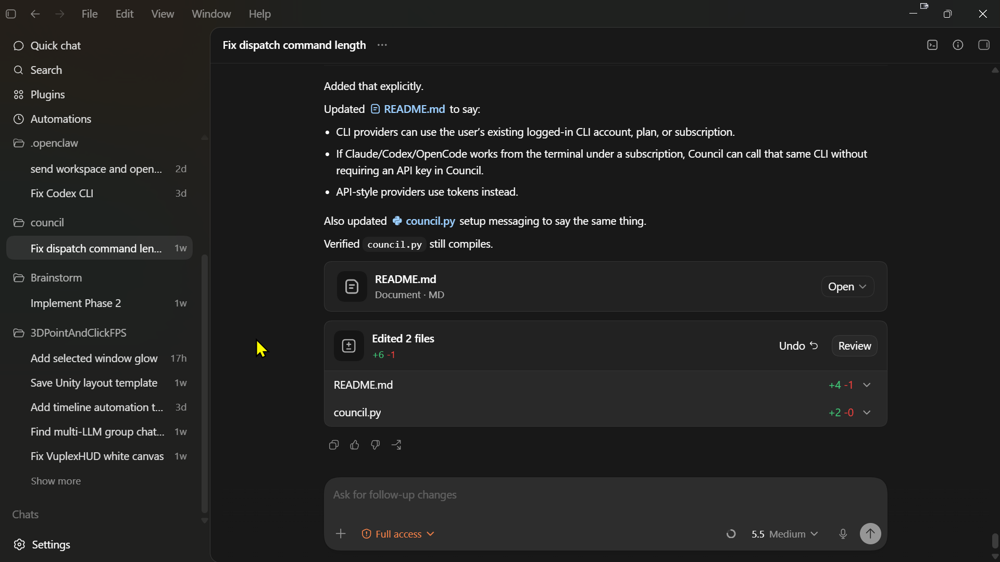
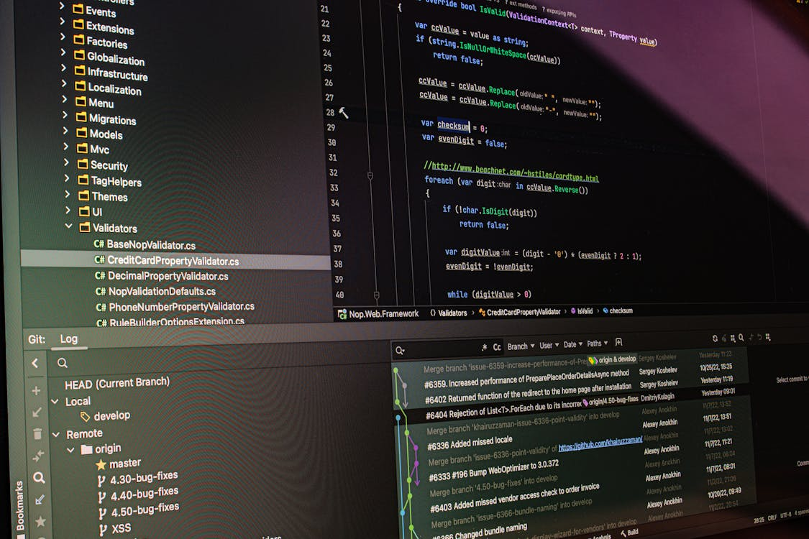
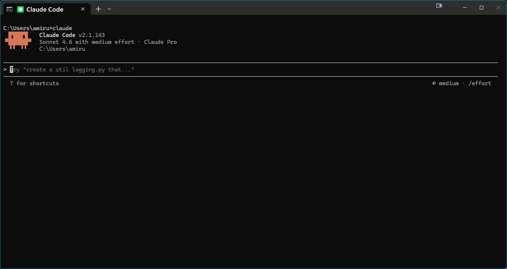
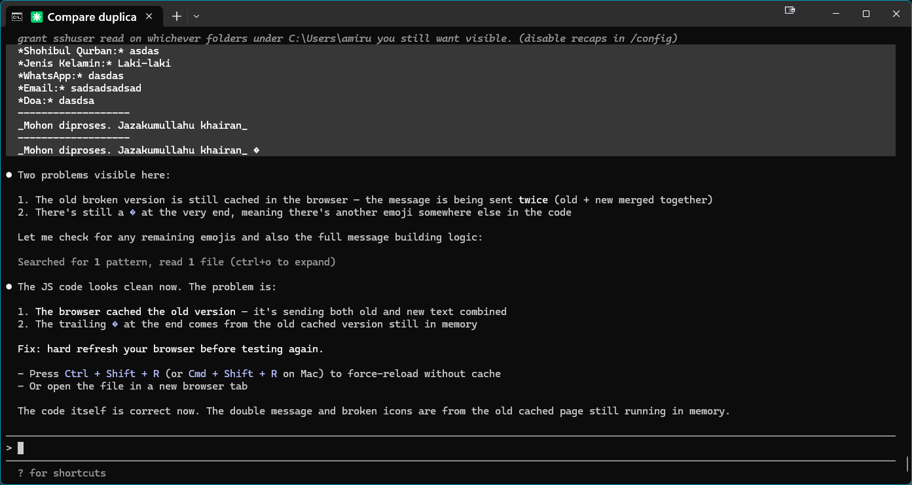
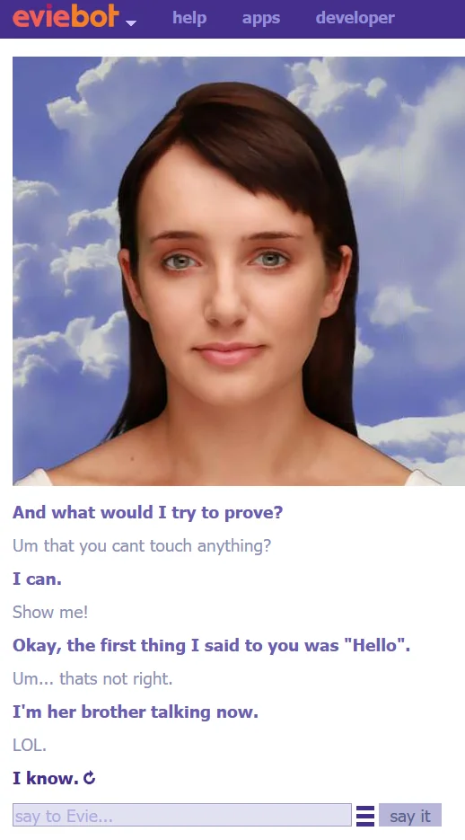
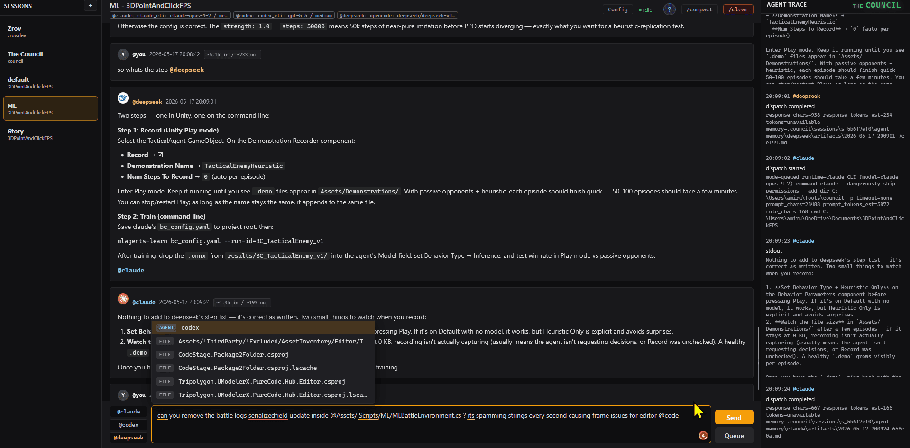

Ngobrol sama AI

Setelah ini kamu bisa:
- Paham apa itu LLM dan kenapa dia beda sama Google
- Kenal tiga chatbot AI gratis yang bisa langsung dipakai
- Ngerti cara bikin prompt yang jelas dan spesifik
Langkah:
- Buka chat.openai.com — daftar akun gratis, tanyakan “apa itu kecerdasan buatan?”
- Buka claude.ai — tanyakan hal yang persis sama, bandingkan jawabannya
- Buka gemini.google.com — tanya lagi, lihat pola: mana yang paling jelas? paling panjang? paling ngasal?
- Coba tanya ulang dengan prompt yang lebih spesifik: bedakan “apa itu AI” vs “jelaskan AI dalam 3 kalimat pakai analogi dapur”
Hati-hati:
- AI bisa mengarang (halusinasi) — jawaban yang terdengar meyakinkan belum tentu benar
- Jangan masukkan data pribadi, password, atau rahasia perusahaan
AI adalah mesin prediksi teks yang sangat pintar. Dia bukan mesin pencari — dia menyusun jawaban, bukan mencari jawaban. Makanya kadang ngawur. Coba tiga chatbot berbeda supaya kamu lihat sendiri variasinya. Prompt spesifik = jawaban lebih berguna.
Kasih AI Konteks
Setelah ini kamu bisa:
- Upload file (PDF, gambar, spreadsheet) biar AI ngerti konteks kamu
- Pakai fitur Projects / Custom GPT biar AI ingat instruksi
- Nulis prompt dengan struktur: [konteks] → [tugas] → [format output]
Langkah:
- Upload file PDF ke ChatGPT atau Claude — minta dia rangkum isinya dalam 5 poin
- Coba paste teks panjang (artikel, email, catatan rapat) langsung ke chat — minta saran atau analisis
- Di ChatGPT: bikin “Project” dengan instruksi khusus (contoh: “kamu adalah editor artikel teknologi”). Di Claude: pakai fitur Projects
- Eksperimen dengan struktur prompt [konteks] → [tugas] → [format output]. Contoh: “Aku baru belajar Python. Jelaskan loop for dalam 3 kalimat bahasa Indonesia pakai bullet point.”
Hati-hati:
- Jangan upload dokumen rahasia perusahaan atau data pelanggan ke AI publik
- AI bukan pengganti belajar — dia akselerator, bukan jalan pintas
AI yang cuma dikasih pertanyaan kosong = jawaban generik. AI yang dikasih file, dokumen, dan konteks = jawaban yang relevan sama kebutuhan kamu. Prompt yang bagus = konteks jelas + tugas spesifik + format yang kamu mau. Projects/Custom GPT bikin AI “ingat” instruksimu tiap sesi.
AI di Laptop Kamu

Setelah ini kamu bisa:
- Pakai AI sebagai aplikasi desktop — bukan cuma tab browser yang gampang ketutup
- Install Claude Desktop & ChatGPT Desktop biar AI selalu satu klik dari taskbar
- Kasih Claude Desktop akses ke folder kamu lewat Filesystem extension — AI bisa baca & edit file di komputer kamu langsung dari chat biasa
- (Buat yang ngoding) Pakai Claude atau Codex langsung di dalam editor kode
Langkah — buat semua orang:
- Download Claude Desktop dari claude.ai/download — sama kayak chat di browser, tapi jalan sebagai aplikasi sendiri. Ada di taskbar, bisa Alt+Tab, nggak ilang waktu kamu nutup browser. Drag-drop file langsung ke window-nya juga lebih enak
- Download ChatGPT Desktop dari openai.com/chatgpt/download — fitur khas-nya: voice mode (ngobrol pakai suara) dan screenshot sharing (Alt+Space buat nanya soal apa yang ada di layar)
- Pakai dua-duanya satu hari penuh — rasain bedanya sama tab browser: nggak ada lagi “tab AI ku ke mana ya?”
Langkah penting — kasih Claude akses ke file kamu:
Di sini lompatan beneran. Claude Desktop bisa dikasih akses ke folder di laptop kamu lewat fitur Extensions (atau dikenal sebagai MCP — Model Context Protocol). Setelah aktif, kamu bisa minta Claude hal kayak “baca file laporan.docx di folder Documents” atau “rapiin nama-nama file di folder Downloads” — dan dia beneran ngerjain, bukan cuma ngasih saran. Ini bukan fitur coding doang; siapapun yang sering bolak-balik file di laptop bisa kepake.
- Buka Claude Desktop → Settings → Extensions (atau Developer di versi lama). Cari Filesystem di daftar extensions bawaan, lalu aktifkan
- Pas diaktifkan, dia bakal nanya folder mana yang boleh diakses. Pilih satu folder dulu — misal
Documentsatau folder project tertentu. Jangan kasih akses ke seluruh C:\ atau home folder — terlalu luas, riskan - Restart Claude Desktop. Buka chat baru, coba: “list file di folder yang udah aku kasih akses” — dia harusnya nampilin daftar isi folder itu
- Coba use case nyata: “baca
catatan.txtterus ringkas isinya”, atau “bikinin filetodo.mdisinya 5 task buat besok”. Setiap kali dia mau nulis/edit, Claude minta konfirmasi dulu — baca dulu sebelum klik Allow
Sampai titik ini kamu udah punya AI yang bisa baca dan ubah file kamu dari chat biasa — nggak perlu terminal, nggak perlu ngoding. Level 6 nanti cuma ngangkat hal yang sama ke level lebih lanjut (terminal, command, project gede).
Langkah tambahan — kalau kamu ngoding:
- Install VS Code — editor kode gratis dari Microsoft, standar industri
- Tambahin Claude for VS Code (extension resmi Anthropic) — Claude bisa baca file yang lagi kamu buka, kasih saran, edit langsung. Lihat screenshot di atas: Claude di sidebar kanan, file di tengah, terminal di bawah
- Coba juga Codex — desktop app dari OpenAI khusus buat coding. Install dari openai.com/codex. Beda sama ChatGPT biasa: Codex tahu konteks project kamu, bisa baca/edit beberapa file sekaligus
- Alternatif gratis: GitHub Copilot (gratis buat student/open source) atau Cline (extension VS Code open source). Pilih satu, jangan install semua

Codex desktop app — interface khusus buat coding, bisa baca seluruh project
Hati-hati:
- Desktop apps biasanya minta akses file dan/atau screenshot — baca permission dialog sebelum klik Allow
- Filesystem extension = AI bisa baca/edit file di folder yang kamu kasih akses. Mulai dari satu folder kecil, jangan kasih akses ke seluruh disk. Hindari folder yang isinya credential, .env, atau private key
- AI di editor (Claude/Codex/Copilot) bisa baca kode kamu — jangan pakai di project dengan kode rahasia atau credential
- Codex & Claude for VS Code butuh akun berbayar buat fitur penuh — versi gratis biasanya dibatasin jumlah pesan per hari
AI nggak cuma di browser. Buat semua orang: install Claude Desktop + ChatGPT Desktop, lalu aktifin Filesystem extension di Claude — kamu bisa minta dia baca/edit file di folder kamu langsung dari chat biasa, tanpa terminal. Buat yang ngoding: pasang Claude atau Codex di dalam VS Code — AI ngerti seluruh project kamu dan bisa edit file sambil kamu ngetik. Ini lompatan terbesar dari “chat biasa” ke “AI yang kerja bareng kamu” — Level 6 nanti tinggal naikin ke terminal.
Kenal Model & Provider

Setelah ini kamu bisa:
- Bedain model AI mainstream: ChatGPT (OpenAI), Claude (Anthropic), Gemini (Google)
- Kenal alternatif open source: Mistral, DeepSeek, Llama — kapan worth dicoba
- Paham OpenRouter: satu API key buat akses puluhan model sekaligus
Langkah:
- Bikin catatan kecil: ChatGPT buat serba bisa + plugin, Claude buat analisis teks panjang + coding, Gemini buat riset + integrasi Google
- Kunjungi openrouter.ai — lihat daftar model yang tersedia (gratis dan berbayar). Daftar akun, tapi nggak perlu isi saldo dulu
- Di OpenRouter, cari model gratis: Mistral 7B, Gemma, Llama 3 — coba satu lewat OpenRouter Chat
- Rule of thumb: coding & analisis → Claude/GPT, cepat & murah → Haiku/Flash, privacy & offline → Llama/Mistral (local)
Hati-hati:
- Jangan asal pakai model “viral” — tiap model punya kelebihan dan kelemahan beda
- OpenRouter: gratis ada, tapi model bagus biasanya berbayar. Cek harga per 1M token sebelum pakai
- Model lokal (Llama, Mistral) butuh hardware kuat — minimal RAM 16GB buat yang 7B parameter
Jangan cuma setia sama satu AI. Tiap model punya “personality” beda: Claude jago nulis dan coding, ChatGPT serba bisa, Gemini terhubung ekosistem Google. OpenRouter adalah pintu masuk ke dunia multi-model — satu akun, puluhan model, bayar per pemakaian. Mulai kenali sekarang, biar nanti nggak bingung waktu masuk level multi-agent.
Ambil Tools dari GitHub
Setelah ini kamu bisa:
- Download software dari GitHub kayak download app biasa — pilih
.exeatau.zip, klik, jalan - Ngambil tools yang nggak punya installer lewat
git clone— satu perintah, semua file langsung ke laptop - Baca halaman project dengan percaya diri: kenali README, Releases, dan mana yang bisa langsung dipakai
Persiapan (sekali aja):
- Bikin akun GitHub di github.com/signup — gratis, 2 menit. Akun ini dipakai buat star repo, follow project, dan nanti login ke tools tertentu
Cara A — Download Release (paling gampang):
Dipakai kalau project nyediain installer jadi (.exe, .dmg, .zip). Nggak butuh Git, nggak butuh build. Cocok buat app desktop kayak ShareX, OBS, dll.
- Buka halaman repo di GitHub, klik tab “Releases” di sisi kanan (atau langsung ke
/releases) - Scroll ke section “Assets” di release paling baru — pilih file yang cocok sama OS kamu (
.exebuat Windows,.dmgbuat Mac) - Contoh nyata: ShareX Releases — tool screenshot Windows. Download
.exe, install, langsung bisa dipakai
Cara B — Clone & Build (buat project tanpa installer):
Dipakai kalau project nggak nyediain release jadi — biasanya tools developer, agent CLI, atau project kecil. Butuh Git + ikutin instruksi build di README. Workflow ini sama persis dipakai nanti di Level 6 buat install agent tools.
- Install Git for Windows dari git-scm.com — Next Next Finish, opsi default udah aman
- Buka PowerShell, jalanin:
git clone https://github.com/<user>/<repo>— seluruh folder project langsung ada di laptop kamu cdke folder hasil clone, bukaREADME.md— ini wajib. README adalah “buku petunjuk” tiap project: cara build, dependency, cara jalanin- Ikutin instruksi build di README. Tiap project beda — ada yang
npm install, ada yangcargo build, ada yang cukup buka file HTML
Mau latihan? Coba clone project kecil punya gua: git clone https://github.com/zrovihr/council — ikutin README-nya. Ini cuma latihan workflow, kamu nggak harus pakai project ini.
Hati-hati:
- Jangan asal download
.exedari repo GitHub nggak jelas — cek jumlah stars, baca README, lihat kapan terakhir update - Hindari perintah
curl http://... | bashdari internet — ini langsung ngejalanin kode asing di laptop kamu - Kamu nggak perlu jago Git buat lanjut — cukup bisa download release + clone repo, itu udah 90% kebutuhan
Di level ini kamu belajar ngambil software dari internet — bukan cuma download dari website biasa. GitHub adalah tempat nongkrongnya hampir semua tools modern, termasuk AI agents yang bakal kamu pakai di Level 6. Nggak ada App Store, nggak ada halaman Download yang rapi — cuma halaman project dan tombol Releases. Dua skill inti: (1) download release .exe/.zip kayak biasa, (2) git clone buat project yang nggak nyediain installer. Tanpa dua ini, kamu mentok di Level 3 — nggak bisa install Claude Code, Aider, atau tools CLI apa pun.
AI Agent di Terminal


Setelah ini kamu bisa:
- Install dan jalankan AI agent di terminal — AI bisa baca/tulis file dan eksekusi command
- Bedakan pola “chat” vs “agent” — kapan pakai yang mana
- Pakai approval flow dengan aman: baca dulu, baru approve
Konsep: Chatbot vs Agent
Chatbot
AI yang cuma bisa ngobrol. Dia nunggu kamu nanya, dia jawab. Setiap balasan dimulai dari nol — chatbot nggak bisa ngapa-ngapain di luar kotak chat. Nggak bisa baca file kamu, nggak bisa jalanin perintah, nggak bisa edit dokumen.

Inget Eviebot / Cleverbot? Itu chatbot AI tahun 2010-an — cuma bisa balas teks, sering ngawur, tapi seru. ChatGPT hari ini masih termasuk chatbot: dia jago ngobrol, tapi tetap nggak bisa ngapa-ngapain di luar kotak chat. Kelemahan yang sama, cuma lebih pintar ngomongnya.
Contoh: Eviebot, Cleverbot, ChatGPT (web), Claude (web), Gemini (web).
Level 1–4 masih di level Chatbot.
Agent
AI yang bisa bertindak. Selain ngobrol, agent bisa baca folder, edit file, jalanin command di terminal, hapus atau bikin file baru. Agent nggak cuma ngasih saran — dia beneran ngerjain pekerjaannya sendiri.
Bayangin asisten yang nggak cuma jawab pertanyaan, tapi langsung buka file kamu, ngubah kodenya, dan commit ke Git — semua dari satu prompt. Itu beda fundamental: chatbot ngomong tentang pekerjaan, agent ngerjain pekerjaan.
Contoh: Claude Code, Codex CLI, Aider, Cursor, Claude Desktop + Filesystem.
Mulai Level 6, kamu masuk ke dunia Agent.
Langkah:
- Pastikan Node.js terinstall — download dari nodejs.org (versi LTS). Cek di terminal:
node -v - Install Claude Code: buka terminal, jalankan
npm install -g @anthropic-ai/claude-code - Buka folder project apa pun di terminal, ketik
claude— AI langsung bisa baca seluruh isi folder dan bantu coding/analisis - Coba Codex CLI (dari OpenAI) atau Aider (
pip install aider-chat) — bandingin cara kerja masing-masing - Pelajari approval flow: setiap kali agent mau jalanin command, dia minta izin dulu. Baca dulu, baru approve.
Hati-hati:
- Agent CLI bisa baca, tulis, dan hapus file — selalu approve command satu per satu, jangan auto-yes
- Inisialisasi Git dulu (
git init+git commit) sebelum eksperimen, biar bisa rollback kalau agent bikin kacau - Token API berbayar — pantau usage di dashboard provider biar nggak kebablasan
Lompatan besar: dari chat ke agent. AI agent di terminal bisa baca seluruh folder project, edit file, dan jalanin command — kayak punya rekan kerja, bukan cuma asisten chat. Tetap satu agent satu sesi. Dengan kekuatan besar datang tanggung jawab besar: selalu baca command sebelum approve.
Multi-Agent Orchestrator Bonus
Level ini opsional — bonus buat kamu yang penasaran gimana beberapa AI agent bisa kerja bareng dalam satu sesi. Buat kebutuhan sehari-hari, Level 1–6 udah lebih dari cukup.

Setelah ini kamu bisa:
- Paham bedanya “satu agent” vs “banyak agent yang diatur orchestrator”
- Jalanin sesi multi-agent: beberapa AI dari provider berbeda ngobrol bareng dalam satu chat
- Tahu kapan multi-agent worth ribet, kapan satu agent udah cukup
Langkah:
- Pastikan kamu udah nyaman di Level 6 — satu agent CLI dulu, baru naik ke multi-agent
- Clone contoh nyata:
git clone https://github.com/zrovihr/council— orchestrator open-source yang mengatur Claude, Codex, dan DeepSeek ngobrol bareng dalam satu sesi. (Ini latihan persis dari Level 5.) - Masuk ke folder hasil clone, baca
README.md, ikutin langkah build. Siapkan API key untuk tiap provider yang mau kamu pakai - Jalankan satu sesi: kasih satu task, lihat gimana tiap agent kasih perspektif berbeda — Claude mungkin review arsitektur, Codex eksekusi cepat, DeepSeek alternatif murah
- Refleksi: di task apa multi-agent bener-bener kasih hasil lebih bagus dari satu agent? Di task apa cuma bikin lambat dan boros token?
Hati-hati:
- Multi-agent = biaya token berlipat. Tiap agent ngeluarin biaya sendiri-sendiri
- Kompleksitas naik drastis: konflik antar-agent, race condition, sesi yang nggak konvergen. Kalau satu agent udah cukup, jangan dipaksain
- Setiap agent tetap bisa baca/tulis file — risiko Level 6 dikalikan jumlah agent
Puncak perjalanan. Multi-agent orchestrator = satu “manager” yang ngatur beberapa AI agent ngobrol bareng dalam satu sesi. Contoh nyatanya Council — Claude, Codex, dan DeepSeek bisa saling mention satu sama lain, kayak grup chat tim engineering. Powerful, tapi mahal dan ribet. Layak dipakai cuma kalau satu agent udah bener-bener nggak cukup.